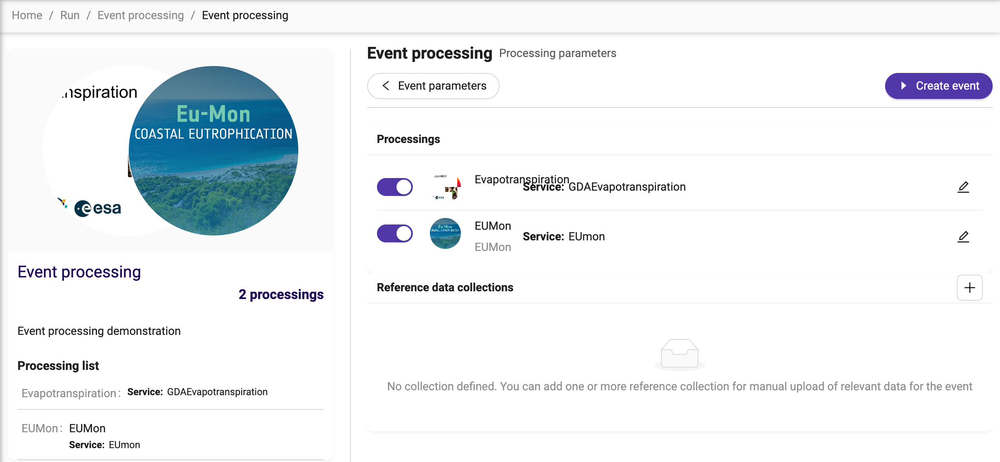
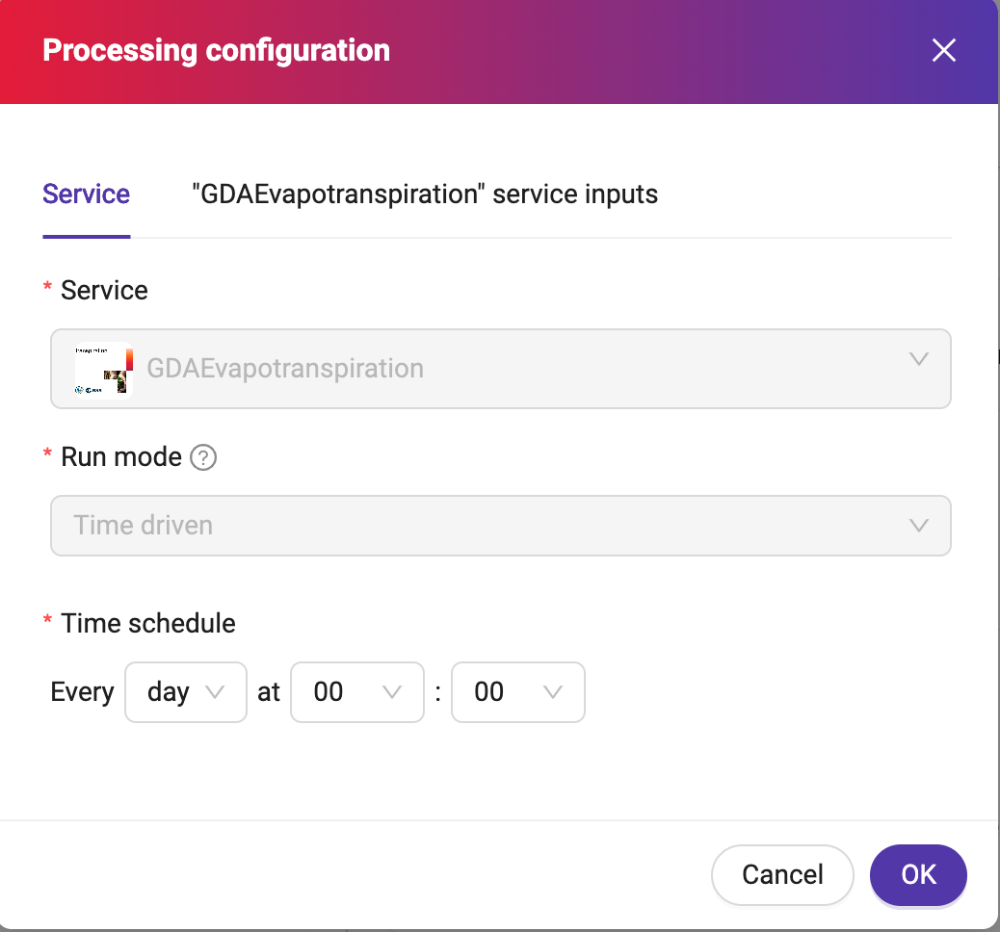
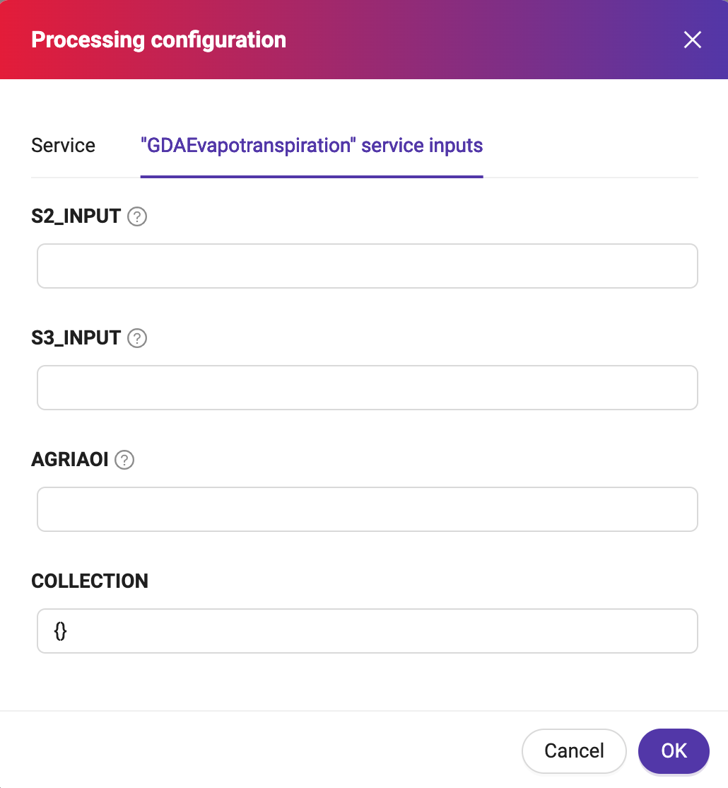

Event Processing
Event processing is the capability of the system to execute various processing services based on specific triggers or events. These events encompass services that can run:
Data driven: New data arrives, either in real-time or at regular intervals.
Time driven: Predefined time-based triggers (e.g., daily, weekly, monthly).
One-off: Ad-hoc requests or specific occurrences (e.g., disaster response, specific user request).
Prerequisites
The event processing is only available to users with role Expert User.
Accessing the feature
Intellect offers you the option to perform event processing. Just:
Visit <base_url>/intellect.
Click on Process some data.
Identify the card Event processing.
Click on Event types under that card.
Select one of the available Event templates.
Input criteria
The event processing allows you specifying criteria for the input satellite data selection, in particular:
area of interest
start and end of the processing
Processing configuration
As an event processing is likely involving multiple processing services, it lets the user to configure them individually, deciding if you want to enable all the preset, or select some of them. Click on the button Processing configuration and see a page similar to the following:
Click on the edit button on each service to further configure it. For example:
 {kind=link}
{kind=link}
It is also possible to add reference data collections, to enrich the event with relevant data for the event.
Operating mode
Once this service is running:
It will periodically search for data that matches the criteria
If it finds any, then it will launch job(s) to process the new data using the specified service(s), making the output available in the same way as for any other job.
If there is a processing service configured in time driven mode, it will execute as many jobs as the configured.
For example, if the event runs for a time-span of 30 days, and one of the services is configured to run daily, the event processing will generate 30 jobs for that service.
This means that once the job is started, there might first be a bulk processing of any historic data, then periodic processing of any new data that arrives.
Important note
Any processing will be conditional upon the user having a sufficient credit. If the user’s balance expires then the processing will be paused, then resume once the balance has been augmented. At the moment the system does not foresee any warning when the user’s credit is about to expire.